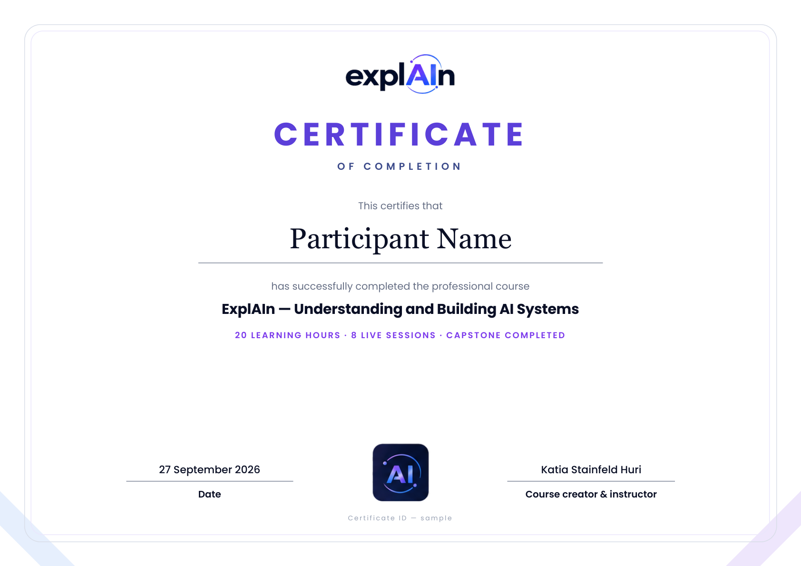

RAG, agents, memory and context blur together.
You know the words. You need the map that connects them.
A practical technical AI course
Stop collecting prompt tricks. Build the mental models to understand how AI actually works—then design, evaluate and use AI systems with confidence.
The gap
Most AI education teaches the interface: which tool to click, which prompt to copy, which feature launched this week. ExplAIn teaches the system underneath—knowledge that stays useful when the tools change.
You know the words. You need the map that connects them.
You need to predict where probability helps and where it creates risk.
You need the language of architecture, controls, evaluation and trade-offs.
The transformation
By the end, you won’t just know more terminology. You’ll be able to reason about AI systems, challenge architecture decisions and make better ones yourself.
The core syllabus
Each module answers one essential question, introduces one durable mental model and ends with an applied decision—not a memory test. Open any module to explore it.
“The model generates. The system does.”
Build the full map before diving into the individual parts.
“Context is the model’s working reality.”
Learn enough transformer architecture to explain real model behavior—without turning this into a math lecture.
“Training changes the model. Inference uses it.”
Replace the “giant database” misconception with a useful model of training, behavior and knowledge.
“Fluency is not the same as truth.”
Understand why models can be impressive and wrong at exactly the same time.
“Construct the world the model reasons inside.”
Move beyond prompt tricks into deliberate construction of the model’s working environment.
“Information, state and behavior are different problems.”
Untangle the concepts that are most often mixed together.
“The model requests. Another system acts.”
Understand tool use without treating APIs, function calling or MCP as magic.
“An agent is a loop with model-selected decisions.”
Separate workflows from autonomy—and learn why more agentic is not automatically better.
“A demo is not a system.”
Move from “it worked for me” to measurable production thinking.
How you’ll learn
Short, visual and applied. Every format earns its place: diagrams for systems, audio for durable concepts and exercises for the decisions you’ll face in real work.
Short explanations built around diagrams—not hour-long talking heads.
System maps and decision frameworks you can return to after the course.
Podcast-style explanations for concepts that survive without a screen.
Predict behavior, debug architecture and choose trade-offs. Minimal memorization.
The capstone
Create an AI System Map that explains the architecture clearly enough to expose trade-offs, risks and failure points. You won’t just finish with knowledge—you’ll finish with a way of thinking.
Is it for you?
ExplAIn sits between superficial tool tutorials and academic machine-learning courses. It’s designed for people who need a strong conceptual foundation they can actually use.
When you finish
Issued when the capstone is done—not for watching videos.
